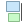
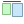
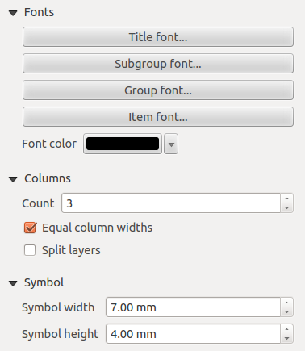
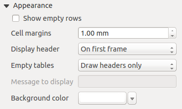
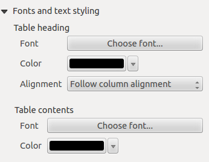
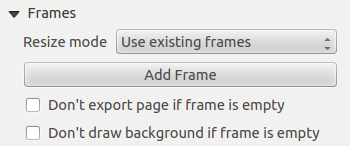

Compositore di stampa
Con Compositore di stampa è possibile creare mappe e occhiali che possono essere stampati o salvati come file PDF, un'immagine o un file SVG. Questo è un modo potente per condividere le informazioni geografiche prodotte con KADAS che possono essere incluse nei report o pubblicate.
Il compositore di stampa offre funzionalità di layout e di stampa. Consente di aggiungere elementi come la mappa, etichette di testo, immagini, legende, barre di scala, forme di base, frecce, tabelle degli attributi e pagine HTML. È possibile dimensionare, raggruppare, allineare, posizionare e ruotare ogni elemento e regolare le proprietà per creare il layout. Il layout può essere stampato o esportato in formati immagine, PostScript, PDF o SVG. È possibile salvare il layout come modello e caricarlo nuovamente in un'altra sessione. Infine, la generazione di diverse mappe basate su un modello può essere effettuata tramite il generatore atlante. Il seguente elenco fornisce una panoramica degli strumenti disponibili nei menu e come icone in una barra degli strumenti:
 Salva progetto
Salva progetto Nuovo compositore
Nuovo compositore Duplica compositore
Duplica compositore Gestore compositore
Gestore compositore Carica da modello
Carica da modello Salva come template
Salva come template Stampa o esporta come PostScript
Stampa o esporta come PostScript Esportazione come immagine
Esportazione come immagine Esportazione come SVG
Esportazione come SVG Esportazione come PDF
Esportazione come PDF Annulla ultima modifica
Annulla ultima modifica Ripristina ultima modifica
Ripristina ultima modifica Zoom in tutta la sua estensione
Zoom in tutta la sua estensione Zoom al 100%
Zoom al 100% Aumenta zoom
Aumenta zoom- Riduci zoom
 Aggiorna
Aggiorna Pan
Pan Zoom sulla regione selezionata
Zoom sulla regione selezionata Seleziona/muovi elemento nella composizione di stampa
Seleziona/muovi elemento nella composizione di stampa Sposta contenuto all'interno dell'elemento
Sposta contenuto all'interno dell'elemento Aggiungi nuovo elemento mappa
Aggiungi nuovo elemento mappa Aggiungi immagine
Aggiungi immagine Aggiungi etichetta
Aggiungi etichetta Aggiungi nuova leggenda
Aggiungi nuova leggenda Aggiungi barra scala
Aggiungi barra scala Aggiungi forma geometrica
Aggiungi forma geometrica Aggiungi freccia
Aggiungi freccia Aggiungi tabella attributi
Aggiungi tabella attributi Aggiungi una pagina HTML
Aggiungi una pagina HTML Raggruppa elementi
Raggruppa elementi Separa gruppo di elementi
Separa gruppo di elementi Blocca gli elementi selezionati
Blocca gli elementi selezionati Sblocca tutti gli elementi
Sblocca tutti gli elementi Sposta elementi selezionati in alto
Sposta elementi selezionati in alto Sposta elementi selezionati in basso
Sposta elementi selezionati in basso Sposta elementi selezionati in primo piano
Sposta elementi selezionati in primo piano Sposta elementi selezionati in ultimo piano
Sposta elementi selezionati in ultimo piano Allinea elementi selezionati a sinistra
Allinea elementi selezionati a sinistra-  Allinea elementi selezionati a destra
 Centra elementi selezionati orrizontalmente
Centra elementi selezionati orrizontalmente Centra elementi selezionati verticalmente
Centra elementi selezionati verticalmente-  Allinea elementi selezionati in alto
 Allinea elementi selezionati in basso
Allinea elementi selezionati in basso Anteprima atlante
Anteprima atlante Prima pagina atlante
Prima pagina atlante- Pagina atlante precedente
 Prossima pagina atlante
Prossima pagina atlante Ultima pagina atlante
Ultima pagina atlante- Stampa atlante
- Esporta atlante come immagine
 Impostazioni atlante
Impostazioni atlante
Panoramica del compositore di stampa
Inizialmente il compositore di stampa si presenta come un'area di disegno vuota, che rappresenta l'area che viene stampata quando si utilizzano le rispettive funzionalità. Con i pulsanti a sinistra dell'area di disegno è possibile aggiungere elementi al compositore di stampla: mappe, etichette di testo, immagini, legende, barre di scala, forme geometriche, frecce, tabelle degli attributi e pagine HTML. In questa barra degli strumenti si trovano anche i pulsanti della barra degli strumenti per navigare, ingrandire un'area e scorrere la vista sul compositore e i pulsanti della barra degli strumenti per selezionare una voce del compositore di mappe e per spostare il contenuto della voce della mappa.
La vista iniziale della composizione di stampa prima di aggiungere elementi è illustrata di seguito:

Sulla destra accanto dell'area di disegno si trovano due pannelli. Il pannello superiore contiene le schede Elementi e Cronologia dei comandi e il pannello inferiore contiene le schede Composizione, Proprietà degli oggetti e Generazione atlante.
- La scheda Elementi fornisce un elenco di tutti gli elementi del compositore di mappe aggiunti alla composizione.
- La scheda Cronologia comando mostra la cronologia di tutte le modifiche apportate al layout del compositore di stampa. Con un clic del mouse, è possibile annullare e rifare le modifiche al layout avanti e indietro fino ad un certo stato.
- La scheda Composizione consente di impostare le dimensioni della pagina, l'orientamento, lo sfondo, il numero di pagine e la qualità di stampa del file di output in dpi. Inoltre, è anche possibile attivare la casella di controllo
 Stampa come raster. Questo significa che tutti gli elementi saranno convertiti in raster prima di essere stampati o salvati come PostScript o PDF. In questa scheda, è anche possibile personalizzare le impostazioni per la griglia e le guide intelligenti.
Stampa come raster. Questo significa che tutti gli elementi saranno convertiti in raster prima di essere stampati o salvati come PostScript o PDF. In questa scheda, è anche possibile personalizzare le impostazioni per la griglia e le guide intelligenti. - La scheda Proprietà elemento visualizza le proprietà per l'elemento selezionato. Clicca sull'icona Seleziona/Move item per selezionare un elemento (es. legenda, barra di scala o etichetta) nell'area di disegno. Quindi fare clic sulla scheda Proprietà elemento e personalizzare le impostazioni per l'elemento selezionato.
- La scheda Generazione Atlante permette di abilitare la generazione di un atlante per il compositore corrente e dà accesso ai suoi parametri.
- Infine, è possibile salvare la composizione di stampa con il pulsante Salva progetto.
Nella parte inferiore della finestra compositore di stampa, è possibile trovare una barra di stato con la posizione del mouse, il numero di pagina corrente e una casella combinata per impostare il livello di zoom.
È possibile aggiungere più elementi al compositore. È anche possibile avere più di una mappa, legenda o barra di scala nel compositore di stampa, su una o più pagine. Ogni elemento ha le proprie proprietà e, nel caso della mappa, la propria estensione. È possibile rimuovere qualsiasi elemento dalla composizione con il tasto Cancella o il tasto Backspace.
Strumenti di navigazione
Per navigare nel layout dell'area di disegno, il compositore di stampa fornisce alcuni strumenti generali:
- Aumenta zoom
- Riduci zoom
- Zoom in tutta la sua estensione
- Zoom al 100%
- Aggiorna
- Pan
- Zoom sulla regione selezionata
È possibile modificare il livello di zoom anche utilizzando la rotellina del mouse o la casella combinata nella barra di stato. Se avete bisogno di passare alla modalità pan mentre lavorate nell'area Composer, potete tenere premuto il tasto Spazio o la rotellina del mouse. Con la Ctrl+Spazio, potete passare temporaneamente alla modalità Aumenta zoom, e con Ctrl+Shift+Spazio, alla modalità Riduci zoom.
Esempio
I passaggi seguenti descrivono un esempio di flusso di lavoro per la creazione di una composizione:
- Nella barra degli strumenti a sinistra, selezionare il pulsante Aggiungi nuova mappa e disegnare un rettangolo nell'area di disegno tenendo premuto il pulsante sinistro del mouse. All'interno del rettangolo verrà disegnata la mappa.
- Nella barra degli strumenti, selezionare Aggiungi barra scala e posizionare l'elemento della mappa con il tasto sinistro del mouse nell'area di disegno. Una barra di scala verrà aggiunta alla composizione.
- Nella barra degli strumenti, selezionare Aggiungi legenda e disegnare un rettangolo nell'area di disegno tenendo premuto il tasto sinistro del mouse. All'interno del rettangolo disegnato verrà disegnata la legenda.
- Selezionare l'icona Seleziona elemento per selezionare la mappa nell'area di disegno e spostarla.
- Mentre l'elemento della mappa è ancora selezionato è anche possibile modificare le dimensioni dell'elemento della mappa. Fare clic tenendo premuto il tasto sinistro del mouse, in un piccolo rettangolo bianco in uno degli angoli dell'elemento della mappa e trascinarlo in una nuova posizione per cambiarne le dimensioni.
- Fare clic sulla scheda Proprietà elemento nel pannello inferiore sinistro e trovare l'impostazione per l'orientamento. Modificare il valore dell'impostazione orientamento della mappa a '15.00°'. Si dovrebbe vedere l'orientamento della voce della mappa cambiare.
- Infine, è possibile salvare la composizione di stampa con il pulsante Salva progetto.
Opzioni compositore di stampa
Da Impostazioni → Opzioni compositore è possibile impostare alcune opzioni che verranno utilizzate come predefinito durante il lavoro.
- Le Impostazioni predefinite compositore consentono di specificare il carattere predefinito da utilizzare.
- Con Aspetto griglia, è possibile impostare lo stile della griglia e il suo colore. Ci sono tre tipi di griglia: Punti, Linee e Croci.
- Le Impostazioni predefinite griglia e guida definiscono la spaziatura, l'offset e la tolleranza della griglia di allineamento.
Scheda Composizione - Impostazione composizione generale
Nella scheda Composizione, è possibile definire le impostazioni globali della propria composizione.
- È possibile scegliere uno dei Preset per il foglio di carta, oppure immettere larghezza e altezza personalizzati.
- La composizione può essere suddivisa in più pagine. Per esempio, una prima pagina può mostrare una mappa, e una seconda pagina può mostrare la tabella degli attributi associata ad un livello, mentre una terza pagina mostra una pagina HTML che si collega al sito web della vostra organizzazione. Impostare il Numero di pagine al valore desiderato. È possibile scegliere la pagina Orientamento e la sua risoluzione esportata. Quando selezionata, print as raster significa che tutti gli elementi saranno rasterizzati prima della stampa o del salvataggio come PostScript o PDF.
- Griglia e guide consente di personalizzare le impostazioni della griglia come spazio, offset e tolleranza in base alle proprie esigenze. La tolleranza è la distanza massima al di sotto della quale un elemento viene agganciato alle guide intelligenti.
È possibile attivare lo snap alla griglia e/o alle guide intelligenti dal menu Visualizza. In questo menu è anche possibile nascondere o mostrare la griglia e le guide intelligenti.
Opzioni comuni per gli elementi della composizione
Gli elementi del compositore hanno un insieme di proprietà comuni che si trovano nella parte inferiore della scheda Proprietà elemento: Posizione e dimensione, rotazione, cornice, sfondo, ID elemento e rendering.

- La finestra di dialogo Posizione e dimensione consente di definire la dimensione e la posizione della cornice che contiene l'elemento. È inoltre possibile scegliere il punto di riferimento per le coordinate X e Y definite.
- La Rotazione imposta la rotazione dell'elemento (in gradi).
- Cornice mostra o nasconde la cornice attorno all'etichetta. Utilizzare i menu Colore cornice e Spessore per regolare queste proprietà.
- Utilizzare il menu Colore di sfondo per impostare un colore di sfondo. Con la finestra di dialogo è possibile scegliere un colore.
- La modalità Rendering può essere selezionata nel campo opzione. Vedere Modalità rendering.
KADAS consente il rendering avanzato per gli elementi Composer proprio come i livelli vettoriali e raster.

Trasparenza: Con questo strumento è possibile rendere visibile l'elemento sottostante nella composizione. Usa il cursore per adattare la visibilità dell'oggetto alle tue esigenze. È inoltre possibile definire con precisione la percentuale di visibilità nel menu accanto al cursore.
- Escludi elemento dall'esportazione: Puoi decidere nascondere un elemento dalle quando la composizione verrà stampata o esportata a PDF o altri formati.
Modalità di sovrapposizione: È possibile ottenere effetti di rendering speciali con questi strumenti che in precedenza si possono conoscere solo da programmi di grafica. I pixel degli elementi di sovrapposizione e di sottoesposizione sono mischiati attraverso le impostazioni descritte di seguito.
- Normale: Questa è la modalità di fusione standard, che utilizza il canale alfa del pixel superiore per fondersi con il pixel sottostante; i colori non sono mescolati.
- Alleggerisci: Seleziona il massimo di ogni componente dai pixel di primo piano e di sfondo. Si tenga presente che i risultati tendono ad essere frastagliati e duri.
- Schermo: I pixel chiari dalla sorgente sono dipinti sopra la destinazione, mentre i pixel scuri non lo sono. Questa modalità è molto utile per mescolare la texture di un livello con un altro livello (ad esempio, è possibile utilizzare un hillshade per strutturare un altro livello).
- Dodge: Dodge illuminerà e saturerà i pixel sottostanti in base alla luminosità del pixel superiore. Così, i pixel superiori più luminosi fanno aumentare la saturazione e la luminosità dei pixel sottostanti. Questo funziona meglio se i pixel superiori non sono troppo luminosi, altrimenti l'effetto è troppo estremo.
- Aggiunta: Questa modalità di fusione aggiunge semplicemente i valori dei pixel di un livello con i valori dei pixel dell'altro. Nel caso di valori superiori a 1 (come nel caso di RGB), viene visualizzato il bianco. Questa modalità è adatta per evidenziare le caratteristiche.
- Scurisci: crea un pixel risultante che trattiene le componenti più piccole dei pixel di primo piano e di sfondo. Come per schiarire, i risultati tendono ad essere frastagliati e duri.
- Moltiplica: Qui, i numeri per ogni pixel dello strato superiore vengono moltiplicati con i numeri per il corrispondente pixel dello strato inferiore. I risultati sono immagini più scure.
- Bruciare: colori più scuri nello strato superiore causano l'oscuramento degli strati sottostanti. Le ustioni possono essere usate per modificare e colorare i livelli sottostanti.
- Sovrapposizione: Questa modalità combina le modalità di moltiplicazione e di fusione dello schermo. Nell'immagine risultante, le parti chiare diventano più chiare e le parti scure più scure.
- Luce morbida: Questo è molto simile alla sovrapposizione, ma invece di usare il moltiplicatore/schermo usa la funzione di masterizzazione colore/bordo. Questa modalità dovrebbe emulare la luce soffusa su un'immagine.
- Luce dura: la luce dura è molto simile alla modalità di sovrapposizione. Dovrebbe emulare la proiezione di una luce molto intensa su un'immagine.
- Differenza: La differenza sottrae il pixel superiore dal pixel inferiore, o viceversa, per ottenere sempre un valore positivo. La fusione con il nero non produce alcun cambiamento, poiché la differenza con tutti i colori è pari a zero.
- Sottrai: Questa modalità di fusione sottrae semplicemente i valori dei pixel di uno strato con i valori dei pixel dell'altro. In caso di valori negativi, viene visualizzato il nero.
L'elemento mappa
Clicca sul pulsante Aggiungi nuova mappa nella barra degli strumenti del compositore di stampa per aggiungere una mappa. Ora, trascinare un rettangolo nell'area di disegno Composer con il tasto sinistro del mouse per aggiungere la mappa. Per visualizzare la mappa corrente, è possibile scegliere tra tre diverse modalità nella scheda Proprietà elemento della mappa:
- Rettangolo è l'impostazione predefinita. Visualizza solo una casella vuota con il messaggio "La mappa sarà stampata qui".
- Cache rende la mappa nella risoluzione corrente dello schermo. Se si ingrandisce o si riduce la finestra Composer, la mappa non viene visualizzata di nuovo, ma l'immagine verrà ridimensionata.
- Render significa che se si ingrandisce o si riduce la finestra Composer, la mappa sarà nuovamente resa, ma per motivi di spazio, solo fino ad una risoluzione massima.
Cache è la modalità di anteprima predefinita per le mappe Compositore di stampa appena aggiunte.
Puoi ridimensionare l'elemento mappa cliccando sul pulsante Seleziona elemento, selezionando l'elemento e trascinando una delle maniglie nell'angolo della mappa. Con la mappa selezionata, è ora possibile adattare altre proprietà nella scheda Proprietà elemento della mappa.
Per spostare i livelli all'interno dell'elemento mappa, selezionare l'elemento mappa, fare clic sull'icona Sblocca elementi per sbloccare tutti gli elementi del compositore bloccati.
Proprietà principali
La finestra di dialogo Proprietà principali della scheda Proprietà elemento della mappa fornisce le seguenti funzionalità:
- L'area Anteprima permette di definire le modalità di anteprima Rettangolo, Cache e Render, come descritto sopra. Se si modifica la visualizzazione sulla mappa KADAS cambiando le proprietà vettoriali o raster, è possibile aggiornare la visualizzazione della composizione di stampa selezionando l'elemento della mappa nella composizione di stampa e cliccando sul pulsante [Aggiorna anteprima anteprima].
- Il campo Scala
 imposta una scala manuale.
imposta una scala manuale. - Il campo Rotazione mappa permette di ruotare il contenuto dell'elemento mappa in senso orario in gradi. La rotazione della visualizzazione della mappa può essere imitata qui. Si noti che un quadro di coordinate corretto può essere aggiunto solo con il valore di default 0 e che una volta definita una rotazione della mappa attualmente non può essere modificata.
- Disegna annotazioni permette di mostrare le annotazioni che possono essere posizionate sull'area di disegno della mappa di KADAS.
- È possibile scegliere di bloccare i livelli mostrati su un elemento della mappa. Selezionare Blocca livelli della mappa. Dopo che questo è stato selezionato, qualsiasi livello che sarebbe stato visualizzato o nascosto nella mappa KADAS non apparirà o non sarà nascosto nella mappa della composizione. Ma lo stile e le etichette di un livello bloccato sono ancora aggiornate secondo l'interfaccia principale di KADAS. È possibile prevenirlo utilizzando Blocca stili dei livelli della mappa.

Estensioni
La finestra di dialogo Estensioni della scheda di proprietà per l'elemento mappa fornisce le seguenti funzionalità:

- L'area Estensioni mappa consente di specificare l'estensione della mappa utilizzando i valori X e Y min/max e facendo clic sul pulsante [Usa estensione della mappa principale]. Questo pulsante imposta l'estensione della mappa dell'elemento della mappa del compositore all'estensione della visualizzazione della mappa di KADAS. Il pulsante [Usa estensione mappa compositore] fa esattamente il contrario, aggiorna l'estensione della visualizzazione della mappa KADAS all'estensione dell'elemento della mappa del compositore.
Se si modifica la visualizzazione nell'area di disegno della mappa KADAS cambiando le proprietà vettoriali o raster, è possibile aggiornare la visualizzazione della composizione di stampa selezionando l'elemento della mappa nella composizione di stampa e facendo clic sul pulsante [Aggiorna anteprima] nella scheda Proprietà elemento della mappa.
Griglie
La finestra di dialogo Griglie della scheda Proprietà elemento della mappa offre la possibilità di aggiungere più griglie a un elemento della mappa.
- Con i pulsanti più e meno è possibile aggiungere o rimuovere una griglia selezionata.
- Con i pulsanti su e giù è possibile spostare una griglia nell'elenco e impostare la priorità di disegno.
Quando si fa doppio clic sulla griglia aggiunta, è possibile darle un altro nome.

Dopo aver aggiunto una griglia, è possibile attivare la casella di controllo per disegnare la griglia.

Come tipo di griglia, è possibile specificare di utilizzare un Solido, Croce, Marcatori o Cornice e solo annotazioni. Quest'ultima opzione è particolarmente utile quando si lavora con mappe ruotate o griglie riproiettate. È possibile scegliere la simbologia della griglia. Vedere la sezione Modalità rendering. Inoltre, è possibile definire un intervallo nelle direzioni X e Y, un offset X e Y, e la larghezza usata per il tipo di griglia trasversale o lineare.

- Ci sono diverse opzioni per modellare la cornice che contiene la mappa.
- Con l'impostazione Solo latitudine/Y e Solo longitudine/X nella sezione deviazioni si ha la possibilità di evitare un mix di latitudine/y e longitudine/x che appaiono su un lato quando si lavora con mappe ruotate o griglie riproiettate.
- La modalità di rendering avanzato è disponibile anche per le griglie (vedere la sezione Modalità rendering).
- La casella di controllo Disegna coordinate permette di aggiungere coordinate alla cornice della mappa. Puoi scegliere il formato numerico dell'annotazione, le opzioni vanno da decimale a gradi, minuti e secondi, con o senza suffisso, e allineato o meno. È possibile scegliere quale annotazione mostrare. Le opzioni sono: mostra tutte, solo latitudine, solo longitudine o disabilita (nessuna). Questo è utile quando la mappa viene ruotata. L'annotazione può essere disegnata all'interno o all'esterno del riquadro della mappa. La direzione dell'annotazione può essere definita come orizzontale, verticale ascendente o verticale discendente. In caso di rotazione della mappa si può infine definire il font dell'annotazione, il colore del font dell'annotazione, la distanza di annotazione dal riquadro della mappa e la precisione delle coordinate disegnate.

Panoramiche
La finestra di dialogo Panoramica della scheda Proprietà elemento della mappa fornisce le seguenti funzionalità:

È possibile scegliere di creare una mappa panoramica, che mostra le estensioni delle altre mappe disponibili nel compositore. Per prima cosa è necessario creare le mappe che si desidera includere nella mappa panoramica. Successivamente si crea la mappa che si desidera utilizzare come mappa panoramica, proprio come una mappa normale.
- Con i pulsanti più e meno è possibile aggiungere o rimuovere una panoramica.
- Con i pulsanti su e giù è possibile spostare una panoramica nell'elenco e impostare la priorità di disegno.
Aprire Panoramiche e premere il pulsante verde più l'icona per aggiungere una panoramica. Inizialmente questa panoramica si chiama Panoramica 1. È possibile cambiare il nome quando si fa doppio clic sull'elemento della panoramica nell'elenco denominato "Panoramica 1" e cambiarlo in un altro nome.
Quando si seleziona la voce di panoramica nell'elenco, è possibile personalizzarla.
- Il Disegna panoramica "<nome_panoramica>" deve essere attivato per disegnare l'estensione della cornice della mappa selezionata.
- La lista Cornice mappa può essere usata per selezionare l'elemento della mappa le cui estensioni saranno disegnate sull'elemento della mappa attuale.
- Stile cornice permette di cambiare lo stile della cornice della panoramica.
- La modalità Modalità di sovrapposizione consente di impostare diverse modalità di miscela di trasparenza. Vedere Modalità rendering.
- Il Inverti panoramica crea una maschera intorno agli estremi quando viene attivata: gli estremi della mappa di riferimento sono mostrati chiaramente, mentre tutto il resto viene miscelato con il colore del frame.
- Il Centra su panoramica imposta l'estensione della cornice panoramica al centro della mappa panoramica. È possibile attivare un solo elemento della panoramica da centrare, se sono state aggiunte più panoramiche.
L'element etichetta
Per aggiungere un'etichetta, clicca sull'icona Aggiungi etichetta, posiziona l'elemento con il tasto sinistro del mouse sull'area di disegno della composizione di stampa e posiziona e personalizza il suo aspetto nella scheda Proprietà elemento dell'etichetta.
La scheda Proprietà elemento di un elemento dell'etichetta fornisce le seguenti funzionalità per l'elemento dell'etichetta:

Proprietà principali
- La finestra di dialogo principale delle proprietà è dove il testo (HTML o meno) o l'espressione necessaria per riempire l'etichetta viene aggiunta all'area di disegno della composizione.
- Le etichette possono essere interpretate come codice HTML: check Disegnare come HTML. Ora è possibile inserire un URL, un'immagine cliccabile che si collega a una pagina web o qualcosa di più complesso.
- Puoi anche inserire un'espressione. Clicca su [Inserisci un'espressione] per aprire una nuova finestra di dialogo. Costruisci un'espressione cliccando sulle funzioni disponibili sul lato sinistro del pannello. Possono essere utili due categorie speciali, particolarmente associate alla funzionalità dell'atlante: funzioni geometriche e funzioni di registrazione. Nella parte inferiore viene mostrata un'anteprima dell'espressione.
Aspetto
- Definire Carattere cliccando sul pulsante [Carattere....] o un Colore carattere selezionando un colore utilizzando lo strumento di selezione del colore.
- È possibile specificare diversi margini orizzontali e verticali in mm. Questo è il margine dal bordo dell'elemento compositore. L'etichetta può essere posizionata al di fuori dei limiti dell'etichetta, ad esempio per allineare gli elementi dell'etichetta con altri elementi. In questo caso è necessario utilizzare valori negativi per il margine.
- L'uso di Allineamento è un altro modo per posizionare l'etichetta. Nota che quando, ad esempio, si utilizza allineamento orizzontale
 Centro, la posizione del margine orizzontale è disabilitata.
Centro, la posizione del margine orizzontale è disabilitata.
L'elemento immagine
Per aggiungere un'immagine, clicca sull'icona Add image, posiziona l'elemento con il tasto sinistro del mouse sull'area di disegno della composizione di stampa e posiziona e personalizza il suo aspetto nella scheda Proprietà elemento dell'immagine.
La scheda Proprietà dell'immagine in Proprietà elemento fornisce le seguenti funzionalità:

Per prima cosa è necessario selezionare l'immagine che si desidera visualizzare. Ci sono diversi modi per impostare la origine immagine nell'area Proprietà principali.
- Utilizzare il pulsante di navigazione
 di immagine per selezionare un file sul computer utilizzando la finestra di dialogo di navigazione. Il browser si avvierà nelle librerie SVG fornite con KADAS. Oltre a
di immagine per selezionare un file sul computer utilizzando la finestra di dialogo di navigazione. Il browser si avvierà nelle librerie SVG fornite con KADAS. Oltre a SVG, è anche possibile selezionare altri formati di immagine come.pngo.jpg. - È possibile inserire la sorgente direttamente nel campo di testo immagine. È anche possibile fornire un indirizzo URL remoto ad un'immagine.
- Dall'area Ricerca cartella è anche possibile selezionare un'immagine da caricamento anteprime .... per impostare la fonte dell'immagine.
- Utilizzare il pulsante dati definiti
 per impostare l'origine dell'immagine da un record o utilizzando un'espressione regolare.
per impostare l'origine dell'immagine da un record o utilizzando un'espressione regolare.
Con l'opzione Modalità ridimensionamento, è possibile impostare la visualizzazione dell'immagine quando si cambia cornice, oppure scegliere di ridimensionare la cornice dell'elemento dell'immagine in modo che corrisponda alle dimensioni originali dell'immagine.
È possibile selezionare una delle seguenti modalità:
- Zoom: Ingrandisce l'immagine alla cornice mantenendo il rapporto di aspetto dell'immagine.
- Allungamento: Allunga l'immagine per adattarla all'interno della cornice, ignora il rapporto di aspetto.
- Clip: Utilizzare questa modalità solo per le immagini raster, imposta le dimensioni dell'immagine alle dimensioni originali senza ridimensionamento e la cornice viene utilizzata per ritagliare l'immagine, in modo che solo la parte dell'immagine all'interno della cornice sia visibile.
- Ingrandimento e ridimensionamento della cornice: Ingrandisce l'immagine per adattarla al frame, quindi ridimensiona il frame per adattarlo all'immagine risultante.
- Ridimensiona la cornice in base alle dimensioni dell'immagine: Imposta la dimensione della cornice in modo che corrisponda alla dimensione originale dell'immagine senza ridimensionamento.
La modalità di ridimensionamento selezionata può disabilitare le opzioni Posizionamento e Rotazione immagine. La rotazione immagine è attiva per le modalità di ridimensionamento Zoom e Clip.
Con Posizionamento è possibile selezionare la posizione dell'immagine all'interno della cornice. L'area Ricerca cartella consente di aggiungere e rimuovere directory con immagini in formato SVG nel database immagini. Un'anteprima delle immagini presenti nelle cartelle selezionate viene visualizzata in un riquadro e può essere utilizzata per selezionare e impostare l'origine dell'immagine.
Le immagini possono essere ruotate con il campo Ruota immagine. Attivando la casella di controllo Sync con mappa sincronizza la rotazione di un'immagine nella mappa KADAS (cioè, una freccia nord ruotata) con l'immagine appropriata della composizione di stampa.
È anche possibile selezionare direttamente una freccia nord. Se si seleziona prima un'immagine della freccia nord da Ricerca cartella e poi si usa il pulsante di navigazione.
Nota: Molte delle frecce nord non hanno una N aggiunta nella freccia nord, questo è fatto apposta per le lingue che non usano una N per il nord, quindi possono usare un'altra lettera.

L'elemento legenda
Per aggiungere una legenda della mappa, clicca sull'icona Aggiungi nuova legenda, posiziona l'elemento con il tasto sinistro del mouse sull'area di disegno della composizione di stampa e posiziona e personalizza l'aspetto nella scheda Proprietà elemento.
La scheda Proprietà elemento di una legenda fornisce le seguenti funzionalità:

Proprietà principali
La finestra di dialogo Proprietà principali nella scheda Proprietà elemento della legenda fornisce le seguenti funzionalità:

Nelle proprietà principali è possibile:
- Cambiare il titolo della legenda.
- Impostare l'allineamento del titolo su Sinistra, Centro o Destra.
- È possibile scegliere a quale voce Mappa si riferirà la legenda corrente nell'elenco di selezione.
- È possibile avvolgere il testo del titolo della legenda su un dato carattere.
Voci della leggenda
La finestra di dialogo Voci legenda della scheda Proprietà elemento fornisce le seguenti funzionalità:

La legenda verrà aggiornata automaticamente se
Auto-update è selezionato. Quando Auto-update è deselezionato, questo vi darà un maggiore controllo sulle voci della legenda. Verranno attivate le icone sotto l'elenco degli elementi della legenda.La finestra Leggende items elenca tutti gli elementi legenda e consente di modificare l'ordine degli elementi, raggruppare i livelli, rimuovere e ripristinare gli elementi nell'elenco, modificare i nomi dei livelli e aggiungere un filtro.
- L'ordine degli articoli può essere modificato utilizzando i pulsanti [Up] e [Down] o con la funzione "drag and drop". L'ordine non può essere modificato per la grafica delle legende WMS.
- Utilizzare il pulsante [Aggiungi gruppo] per aggiungere un gruppo di legende.
- Usa il pulsante [più] e [meno] per aggiungere o rimuovere i livelli.
- Il pulsante [Edit] è usato per modificare il livello, il nome del gruppo o il titolo, per prima cosa è necessario selezionare la voce legenda.
- Il pulsante [Sigma] aggiunge un conteggio delle caratteristiche per ogni livello vettoriale.
Usa il pulsante [filtro] per filtrare la legenda in base al contenuto della mappa, solo gli elementi legenda visibili nella mappa saranno elencati nella legenda.
Dopo aver cambiato la simbologia nella finestra principale di KADAS, puoi cliccare su [Update All] per adattare le modifiche nell'elemento legenda della composizione di stampa.
Carattere, Colonne, Simbolo .
Le finestre di dialogo Fonts, Columns e Symbol della scheda Proprietà elemento forniscono le seguenti funzionalità:

- È possibile modificare il carattere del titolo della legenda, del gruppo, del sottogruppo e dell'elemento (livello) nell'elemento legenda. Fare clic sul pulsante di una categoria per aprire una finestra di dialogo Seleziona font.
- Si fornisce alle etichette un Colore utilizzando il selezionatore avanzato di colori, tuttavia il colore selezionato verrà assegnato a tutti gli elementi del carattere nella legenda.
- Gli elementi della legenda possono essere disposti su più colonne. Impostare il numero di colonne nel campo Count .
- Larghezze colonne uguali imposta come regolare le colonne delle legende.
- L'opzione Split layers permette di suddividere una legenda classificata o graduata tra le colonne.
- È possibile modificare la larghezza e l'altezza del simbolo della legenda in questa finestra di dialogo.
WMS LegendGraphic e spaziatura
Le finestre di dialogo WMS LegendGraphic e Spaziatura della scheda Proprietà elemento forniscono le seguenti funzionalità:

Quando si aggiunge un livello WMS e si inserisce una legenda compositore, viene inviata una richiesta al server WMS per fornire una legenda WMS. Questa legenda verrà mostrata solo se il server WMS fornisce la funzionalità GetLegendGraphic. Il contenuto della legenda WMS sarà fornito come immagine raster.
WMS LegendGraphic è usato per regolare la larghezza e l'altezza dell'immagine raster della leggenda WMS.
Attraverso questa finestra di dialogo è possibile personalizzare la spaziatura intorno a titolo, gruppo, sottogruppo, sottogruppo, simbolo, etichetta dell'icona, spazio scatola o spazio colonna.
L'elemento barra di scala
Per aggiungere una barra di scala, fare clic sull'icona Aggiungi nuova barra di scala, posizionare l'elemento con il tasto sinistro del mouse sull'area di disegno della composizione di stampa e posizionare e personalizzare l'aspetto nella scheda Proprietà elemento della barra di scala.
La scheda Proprietà elemento di una barra di scala fornisce le seguenti funzionalità:

Proprietà principali
La finestra di dialogo Proprietà principali della scheda Proprietà elemento della barra di scala fornisce le seguenti funzionalità:

- In primo luogo, scegliere la mappa alla quale sarà collegata la barra di scala.
- Quindi, scegliere lo stile della barra della scala. Sono disponibili sei stili:
- Cornice singola e cornice doppia, che contengono una o due linee di cornice a colori alternati.
- Righette sulla linea: Metà, Su o Giù.
- Numerico, dove viene stampato il rapporto di scala (cioè, 1:50000).
Unità e Segmenti
Le finestre di dialogo Unità e Segmenti della scheda Proprietà elemento della barra di scala forniscono le seguenti funzionalità:

In queste due finestre di dialogo, è possibile impostare come sarà rappresentata la barra della scala.
- Selezionare le unità di misura della mappa utilizzate. Ci sono quattro possibilità di scelta: Unità mappa è la selezione automatica delle unità di misura; Metri, Piedi o Miglia nautiche conversioni di unità di forza.
- Il campo Etichetta definisce il testo utilizzato per descrivere le unità della barra della scala.
- Il campo Map units per bar unit permette di fissare il rapporto tra l'unità di una mappa e la sua rappresentazione nella barra di scala.
- È possibile definire quanti segmenti saranno disegnati a sinistra e a destra della barra della scala e quanto tempo sarà lungo ogni segmento (campo Dimensione). È possibile definire anche l'altezza.
Visualizza
La finestra di dialogo Visualizza della scheda Proprietà elemento della barra di scala fornisce le seguenti funzionalità:

È possibile definire come sarà visualizzata la barra della scala nel suo riquadro.
- Margine della casella : spazio tra il testo e i bordi della cornice
- Margine delle etichette : spazio tra il testo e il disegno della barra in scala.
- Larghezza della linea : larghezza della linea in larghezza del disegno della barra in scala
- Stile unito : Angoli alla fine dello scalebar in stile Bevel, Rounded o Square (disponibile solo per Scale bar style Single Box & Double Box)
- Stile Cap : Fine di tutte le linee in stile Square, Round o Flat (disponibile solo per le Line Ticks Up, Down e Middle).
- Allineamento : Mette il testo sul lato sinistro, centrale o destro del riquadro (funziona solo per lo stile della barra di scala Numerico).
Caratteri e colori
La finestra di dialogo Fonts and colors della scheda Proprietà elemento della barra di scala fornisce le seguenti funzionalità:

È possibile definire i font e i colori utilizzati per la barra della scala.
- Usare il pulsante [Font\] per impostare il font
- Colore font: imposta il colore del font
- Colore di riempimento: impostare il primo colore di riempimento
- Colore di riempimento secondario: impostare il secondo colore di riempimento
- Colore dei tratti: impostare il colore delle linee della barra di scala.
I colori di riempimento sono utilizzati solo per gli stili di box in scala Box singolo e Box doppio. Per selezionare un colore è possibile utilizzare l'opzione elenco utilizzando la freccia a discesa per aprire una semplice opzione di selezione colore o l'opzione di selezione colore più avanzata, che viene avviata quando si fa clic sulla casella colorata nella finestra di dialogo.
Elementi figure geometriche
Per aggiungere una forma geometrica (ellisse, rettangolo, triangolo), fare clic sull'icona Add Arrow, posizionare l'elemento tenendo premuto il tasto sinistro del mouse. Personalizza l'aspetto nella scheda Proprietà elemento.
Quando si tiene premuto anche il tasto Shift mentre si posiziona la forma di base è possibile creare un quadrato, cerchio o triangolo.

La scheda delle proprietà della voce Forma consente di selezionare se si desidera disegnare un'ellisse, un rettangolo o un triangolo all'interno della cornice data.
È possibile impostare lo stile della forma utilizzando la finestra di dialogo avanzata dello stile dei simboli con cui è possibile definire il contorno e il colore di riempimento, il motivo di riempimento, l'uso di marcatori, eccetera.
Per la forma rettangolare, è possibile impostare il valore del raggio di arrotondamento degli angoli.
Nota: A differenza di altri elementi, non è possibile modellare la cornice o il colore di sfondo della cornice.
L'elemento freccia
Per aggiungere una freccia, fare clic sull'icona Add Arrow, posizionare l'elemento tenendo premuto il tasto sinistro del mouse e trascinare una linea per disegnare la freccia nell'area di disegno della composizione di stampa e posizionare e personalizzare l'aspetto nella scheda Proprietà elemento della barra di scala.
Quando si tiene premuto anche il tasto Shift mentre si posiziona la freccia, questa viene posizionata in un angolo di 45° esatto.
L'elemento freccia può essere utilizzato per aggiungere una riga o una semplice freccia che può essere utilizzata, ad esempio, per mostrare la relazione tra altri elementi del compositore di stampa. Per creare una freccia nord, l'elemento dell'immagine deve essere considerato per primo. KADAS ha una serie di frecce Nord in formato SVG. Inoltre è possibile collegare un elemento dell'immagine con una mappa in modo che possa ruotare automaticamente con la mappa.

Proprietà dell'elemento
La scheda delle proprietà della voce Freccia consente di configurare una voce con una freccia.
Il pulsante [Stile linea ....] può essere usato per impostare lo stile della linea utilizzando l'editor dei simboli di stile linea.
In Marcatori freccia è possibile selezionare uno dei tre pulsanti di opzione.
- Default : Per disegnare una freccia normale, ti dà la possibilità di disegnare la punta della freccia.
- Nessuno : Per tracciare una linea senza punta di freccia
- Marcatore SVG : Per tracciare una linea con un marcatore SVG Partire e/o Fine marcatore.
Per il marcatore di freccia Default è possibile utilizzare le seguenti opzioni per stilizzare la punta della freccia.
- Colore del contorno delle frecce : Impostare il colore del contorno della punta della freccia
- Colore di riempimento delle frecce : Impostare il colore di riempimento della punta della freccia
- Larghezza del contorno della freccia : Impostare la larghezza del contorno della punta della freccia
- Larghezza della punta della freccia: Impostare la dimensione della punta della freccia
Per SVG Marker è possibile utilizzare le seguenti opzioni.
- Punto di partenza : Scegliere un'immagine SVG da disegnare all'inizio della linea
- Indicatore finale : Scegliere un'immagine SVG da disegnare alla fine della linea
- Larghezza della punta della freccia: Imposta la dimensione dell'indicatore di inizio e/o fine.
Le immagini SVG vengono ruotate automaticamente con la linea. Il colore dell'immagine SVG non può essere cambiato.
L'elemento tabella degli attributi .
È possibile aggiungere parti di una tabella di attributi vettoriali composizione: Fare clic sull'icona Aggiungi tabella attributi, posizionare l'elemento con il tasto sinistro del mouse sull'area di disegno della composizione di stampa e posizionare e personalizzare l'aspetto nella scheda Proprietà elemento.
La scheda Proprietà elemento della tabella degli attributi fornisce le seguenti funzionalità:

Proprietà principali
Le finestre di dialogo Proprietà principali della scheda Proprietà elemento della tabella degli attributi forniscono le seguenti funzionalità:

- Per Source normalmente è possibile selezionare solo "Caratteristiche del livello".
- Con Layer è possibile scegliere tra i livelli vettoriali caricati nel progetto.
- Il pulsante [Aggiorna dati tabella] può essere usato per aggiornare la tabella quando il contenuto effettivo della tabella è cambiato.
- Nel caso in cui sia stata attivata la generazione dell'atlante.


- Il pulsante [Attributi....] avvia il menu Seleziona attributi, che può essere utilizzato per modificare il contenuto visibile della tabella. Dopo aver effettuato le modifiche utilizzare il pulsante [OK] per applicare le modifiche alla tabella.
Nella sezione Colonne è possibile:
- Rimuovere un attributo, basta selezionare una riga di un attributo cliccando in un punto qualsiasi di una riga e premere il pulsante meno per rimuovere l'attributo selezionato.
- Aggiungere un nuovo attributo utilizzare il pulsante più. Alla fine appare una nuova riga vuota ed è possibile selezionare la cella vuota della colonna Attributo. Si può selezionare un attributo di campo dalla lista o si può scegliere di costruire un nuovo attributo usando un'espressione regolare (pulsante
 ). Naturalmente è possibile modificare ogni attributo già esistente per mezzo di un'espressione regolare.
). Naturalmente è possibile modificare ogni attributo già esistente per mezzo di un'espressione regolare. - Usare le frecce su e giù per cambiare l'ordine degli attributi nella tabella.
- Selezionare una cella nella colonna Intestazioni per cambiare l'intestazione, basta digitare un nuovo nome.
- Selezionare una cella nella colonna Allineamento e si può scegliere tra allineamento a sinistra, centro o destra.
- Selezionare una cella nella colonna Larghezza e si può cambiare da Automatico a una larghezza in mm, basta digitare un numero. Quando si desidera tornare ad Automatico, utilizzare la croce.
- Il pulsante [Reset] può sempre essere usato per ripristinare le impostazioni degli attributi originali.
Nella sezione Ordinamento è possibile:
- Aggiungere un attributo per ordinare la tabella con cui ordinare la tabella. Selezionare un attributo e impostare l'ordine di ordinamento su Ascendente o Discendente e premere il pulsante più. Una nuova riga viene aggiunta all'elenco degli ordini.
- Selezionare una riga nell'elenco e usare i pulsanti su e giù per cambiare la priorità di ordinamento a livello di attributo.
- Usare il pulsante meno per rimuovere un attributo dall'elenco degli ordini.

Filtrare oggetti
Le finestre di dialogo Filtrare oggetti della scheda Proprietà elemento della tabella degli attributi forniscono le seguenti funzionalità:

È possibile:
Definire le righe massime da visualizzare.
Attivare
Rimuovere le righe duplicate dalla tabella per mostrare solo i record unici.Attivare
Mostra solo le caratteristiche visibili all'interno di una mappa e selezionare la corrispondente Mappa composer per visualizzare gli attributi delle caratteristiche visibili solo sulla mappa selezionata.Attivare
Generare atlante. Quando attivato mostrerà una tabella con solo le caratteristiche mostrate sulla mappa di quella particolare pagina dell'atlante.Attivare
pulsante di espressione. Alcuni esempi di istruzioni di filtraggio che puoi usare quando hai caricato il livello aeroporti dal set di dati Sample:ELEV > 500NAME = 'ANIAK'NAME NOT LIKE 'AN%regexp_match( attribute( $currentfeature, 'USE' ) , '[i]')L'ultima espressione regolare includerà solo le arpoirts che hanno una lettera i nel campo attributo USE.
Aspetto
Le finestre di dialogo Aspetto nelle Proprietà elemento della tabella degli attributi forniscono le seguenti funzionalità:

- Fare clic su Mostra righe vuote per rendere visibili le voci vuote nella tabella degli attributi.
- Con Cella margini è possibile definire il margine intorno al testo in ogni cella della tabella.
- Con Mostra intestazione puoi selezionare da una lista una delle opzioni predefinite Sul primo frame, Su tutti i frames o Senza intestazione.
- L'opzione Tabella vuota controlla cosa verrà visualizzato quando la selezione dei risultati è vuota.
- Disegna solo intestazioni, disegnerà solo l'intestazione a meno che non sia stato scelto "Nessuna intestazione" per Intestazione di visualizzazione.
- Nascondi intero tavolo, disegnerà solo lo sfondo del tavolo. Puoi attivare Non disegnare lo sfondo se il frame è vuoto in Frames per nascondere completamente la tabella.
- Disegnare celle vuote, riempirà la tabella degli attributi con celle vuote, questa opzione può anche essere usata per fornire ulteriori celle vuote quando si ha un risultato da mostrare!
- Mostra messaggio impostato, disegnerà l'intestazione e aggiungerà una cella che abbraccia tutte le colonne e visualizzerà un messaggio come Nessun risultato che può essere fornito nell'opzione Messaggio da visualizzare.
- L'opzione Messaggio da visualizzare è attivata solo quando si seleziona Mostra messaggio impostato per Tabella vuota. Il messaggio fornito sarà mostrato nella tabella nella prima riga, quando il risultato è una tabella vuota.
- Con colore di sfondo è possibile impostare il colore di sfondo della tabella.
Mostra griglia
La finestra di dialogo Mostra griglia nelle Proprietà elemento della tabella degli attributi fornisce le seguenti funzionalità:

- Attivare Mostra griglia quando si desidera visualizzare la griglia, i contorni delle celle della tabella.
- Con Spessore linea è possibile impostare lo spessore delle linee utilizzate nella griglia.
- Il Colore della griglia può essere impostato utilizzando la finestra di dialogo di selezione del colore.
Carattere e formattazione testo .
La finestra di dialogo Carattere e formattazione testo della scheda Proprietà elemento della tabella degli attributi fornisce le seguenti funzionalità:

- È possibile definire Carattee e Colore per intestazione della tabella e contenuti della tabella.
- Per l'intestazione della tabella è inoltre possibile impostare il Allineamento e scegliere tra Seguire l'allineamento della colonna, A sinistra, Al centro o A destra. L'allineamento delle colonne viene impostato utilizzando la finestra di dialogo Seleziona Attributi.
Cornici
La finestra di dialogo Cornici nelle Proprietà elemento della tabella degli attributi fornisce le seguenti funzionalità:

- Con Modalità ridimensionamento è possibile selezionare come rendere il contenuto della tabella degli attributi:
- Usa frames esistenti visualizza il risultato solo nel primo frame e solo i frames aggiunti.
- L'estensione alla pagina successiva creerà tutti i frames (e le pagine corrispondenti) necessari per visualizzare la selezione completa della tabella degli attributi. Ogni frame può essere spostato sul layout. Se si ridimensiona un frame, la tabella risultante sarà divisa tra gli altri frames. L'ultimo frame sarà tagliato per adattarsi alla tabella.
- Ripetere fino al termine creerà anche tanti frames quanti sono quelli dell'opzione Estendi alla pagina successiva, tranne che tutti i frames avranno la stessa dimensione.
- Usare il pulsante [Aggiungi frame] per aggiungere un altro frame con le stesse dimensioni del frame selezionato. Il risultato della tabella che non si adatta al primo frame continuerà nel frame successivo quando si utilizza la modalità di ridimensionamento Usa frames esistenti.
- Attivare Non esportare la pagina se il frame è vuoto impedisce di esportare la pagina quando il frame della tabella non ha contenuto. Questo significa che tutti gli altri elementi del compositore, mappe, scalebar, legende, ecc. non saranno visibili nel risultato.
- Attivare Non disegnare lo sfondo se il frame è vuoto impedisce che lo sfondo venga disegnato quando il frame della tabella non ha contenuto.
L'elemento HTML .
E' possibile aggiungere una cornice che visualizza i contenuti di un sito web o addirittura creare e modellare la propria pagina HTML e visualizzarla.

Sorgente HTML
Come sorgente HTML, è possibile impostare un URL e attivare il pulsante radio dell'URL oppure inserire la sorgente HTML direttamente nella casella di testo fornita e attivare il pulsante radio Source.
La finestra di dialogo Sorgente HTML della scheda Proprietà elemento dell'elemento HTML fornisce le seguenti funzionalità:

- In URL puoi inserire l'URL di una pagina web che hai copiato dal tuo browser internet o selezionare un file HTML usando il pulsante di navigazione . C'è anche la possibilità di utilizzare il pulsante di override Definito da dati, per fornire un URL dal contenuto di un campo attributo di una tabella o utilizzando un'espressione regolare.
- In Source è possibile inserire testo nella casella di testo con alcuni tag HTML o fornire una pagina HTML completa.
- Il pulsante [inserire un'espressione] può essere usato per inserire un'espressione come
[%Year($now)%]%]nella casella di testo sorgente per visualizzare l'anno corrente. Questo pulsante viene attivato solo quando è selezionato il pulsante radio Source. Dopo aver inserito l'espressione clicca da qualche parte nella casella di testo prima di aggiornare la cornice HTML, altrimenti perderai l'espressione. - Attiva Valuta le espressioni QGIS in codice HTML per vedere il risultato dell'espressione che hai incluso, altrimenti vedrai invece l'espressione.
- Usa il pulsante [Aggiorna HTML] per aggiornare i frame HTML per vedere il risultato delle modifiche.
Cornici
La finestra di dialogo Cornice della scheda Proprietà elemento del frame HTML fornisce le seguenti funzionalità:

- Con Modalità ridimensionamento è possibile selezionare come rendere i contenuti HTML:
- Usa frames esistenti visualizza il risultato solo nel primo frame e solo i frames aggiunti.
- L'estensione alla pagina successiva creerà tutti i frames (e le pagine corrispondenti) necessari per rendere l'altezza della pagina web. Ogni frame può essere spostato sul layout. Se si ridimensiona un frame, la pagina web sarà divisa tra gli altri frames. L'ultimo frame sarà tagliato per adattarsi alla pagina web.
- Ripetere su ogni pagina ripeterà la parte superiore sinistra della pagina web su ogni pagina in frame della stessa dimensione.
- Ripetere fino al termine creerà anche tanti frames quanti sono quelli dell'opzione Estendi alla pagina successiva, tranne per il fatto che tutti i frames avranno la stessa dimensione.
- Usa il pulsante [Add Frame] per aggiungere un altro frame con le stesse dimensioni del frame selezionato. Se la pagina HTML che non si adatta al primo frame, continuerà nel frame successivo quando si usa Modalità di ridimensionamento o Usa frames esistenti.
- Attivare Non esportare la pagina se il frame è vuoto impedisce che il layout della mappa venga esportato quando il frame non ha contenuti HTML. Questo significa che tutti gli altri elementi del compositore, mappe, scalebar, legende, ecc. non saranno visibili nel risultato.
- Attivare Non disegnare lo sfondo se il frame è vuoto impedisce che il frame HTML venga disegnato se il frame è vuoto.
Interruzioni di pagina intelligenti e stylesheet personalizzato .
La finestra di dialogo Interruzioni di pagina intelligenti e Stylesheet personalizzato della scheda Proprietà elemento del frame HTML fornisce le seguenti funzionalità:

Attivare
Usa interruzioni di pagina intelligenti per evitare che il contenuto del frame html rompa a metà di una riga di testo in modo che continui bene e senza intoppi nel frame successivo.Impostare la Distanza massima consentita quando si calcola dove posizionare le interruzioni di pagina nell'html. Questa distanza è la quantità massima di spazio vuoto consentito nella parte inferiore di un frame dopo aver calcolato la posizione ottimale di interruzione. Impostando un valore più grande si otterrà una migliore scelta della posizione di interruzione di pagina, ma più spazio sprecato nella parte inferiore dei frames. Questo viene utilizzato solo quando è attivato Usa interruzioni pagina intelligente.
Attivare
Foglio di stile utente per applicare stili HTML che spesso sono forniti in fogli di stile a cascata. Un esempio di codice di stile è fornito di seguito per impostare il colore dell'intestazione <h1>`` in verde e impostare il carattere e la dimensione del testo incluso nei tag di paragrafo`.
h1 {color: #00ff00ff00; } p {font-family: "Times New Roman", Times, Times, serif; font-size: 20px; }Usa il pulsante [Aggiorna HTML] per vedere il risultato delle impostazioni del foglio di stile.
Gestire gli elementi
Dimensioni e posizione
Ogni elemento all'interno del Compositore può essere spostato / ridimensionato per creare un layout perfetto. Per entrambe le operazioni il primo passo è attivare lo strumento Seleziona elemento e cliccare sulla voce; è quindi possibile spostarla tenendo premuto il tasto sinistro del mouse. Se avete bisogno di limitare i movimenti all'asse orizzontale o verticale, basta tenere premuto il tasto Shift mentre si muove il mouse. Se hai bisogno di una maggiore precisione, puoi muovere un elemento selezionato usando i "tasti freccia" sulla tastiera; se il movimento è troppo lento, puoi accelerarlo tenendo premuto il tasto Shift.
Un elemento selezionato mostrerà dei quadrati sui suoi confini; spostando uno di essi con il mouse, ridimensionerà l'elemento nella direzione corrispondente. Mentre si ridimensiona, tenendo premuto Shift si manterrà il rapporto d'aspetto. Tenendo premuto Alt si ridimensionerà dal centro dell'oggetto.
La posizione corretta per un articolo può essere ottenuta con lo snapping alla griglia o alle guide intelligenti. Le guide vengono impostate facendo clic e trascinando i righelli. Le guide vengono spostate facendo clic sul righello, livellando la guida e trascinandola in una nuova posizione. Per eliminare una guida, spostarla fuori dall'area di disegno. Se avete bisogno di disabilitare lo snap al volo basta tenere premuto il tasto Ctrl mentre si muove il mouse.
È possibile scegliere più elementi con il pulsante Seleziona elemento. Tieni premuto il pulsante Shift e clicca su tutti gli elementi di cui hai bisogno. È quindi possibile ridimensionare/spostare questo gruppo come un singolo elemento.
Una volta trovata la posizione corretta per un elemento, è possibile bloccarlo utilizzando gli elementi sulla barra degli strumenti o spuntando la casella accanto all'elemento nella scheda Elementi. Gli elementi bloccati non sono selezionabili nell'area di disegno.
Gli elementi bloccati possono essere sbloccati selezionando l'elemento nella scheda Elementi e deselezionando la casella di spunta oppure è possibile utilizzare le icone sulla barra degli strumenti.
Per deselezionare un elemento, basta cliccare su di esso tenendo premuto il pulsante Shift.
All'interno del menu Modifica, si possono trovare azioni per selezionare tutte le voci, per cancellare tutte le selezioni o per invertire la selezione corrente.
Allineamento

Per utilizzare una funzionalità di allineamento, si selezionano prima alcuni elementi e poi si clicca sull'icona di allineamento corrispondente. Tutti gli elementi selezionati saranno quindi allineati all'interno del loro comune rettangolo di delimitazione. Quando si spostano elementi sull'area di disegno del Compositore, le linee di aiuto all'allineamento appaiono quando i bordi, i centri o gli angoli sono allineati.
Copia/Taglia/Incolla elementi
Il compositore di stampa include azioni per utilizzare la comune funzionalità Copia/Taglia/Incolla per gli elementi del layout. Come al solito è necessario prima di tutto selezionare gli elementi utilizzando una delle opzioni viste sopra; a questo punto le azioni possono essere trovate nel menu Modifica. Quando si usa l'azione Incolla, gli elementi saranno incollati in base alla posizione corrente del mouse.
Nota: Gli elementi HTML non possono essere copiati in questo modo. Come soluzione, usa il pulsante [Add Frame] nella scheda Proprietà elemento.
Durante il processo di layout è possibile ripristinare e ripristinare le modifiche. Questo può essere fatto con gli strumenti di ripristino e ripristino:
 Annulla ultima modifica
Annulla ultima modifica Ripristina ultima modifica
Ripristina ultima modifica
Questo può essere fatto anche con un clic del mouse all'interno della scheda Cronologia comando.

Il compositore di stampa include funzioni di generazione che consentono di creare libri cartografici in modo automatico. Il concetto è quello di utilizzare un livello di copertura, che contiene geometrie e campi. Per ogni geometria del livello di copertura, verrà generato un nuovo output dove il contenuto di alcune mappe verrà spostato per evidenziare la geometria corrente. I campi associati a questa geometria possono essere utilizzati all'interno delle etichette di testo.
Ogni pagina sarà generata con ogni caratteristica. Per abilitare la generazione di un atlante e i parametri di generazione degli accessi, fare riferimento alla scheda di generazione dell'atlante. Questa scheda contiene i seguenti widget:

- Generare un atlante, che abilita o disabilita la generazione dell'atlante.
- Un Strato di copertura
 combo box che permette di scegliere il livello (vettoriale) contenente le geometrie su cui iterare.
combo box che permette di scegliere il livello (vettoriale) contenente le geometrie su cui iterare. - Un Strato di copertura nascosto che, se selezionato, nasconderà il livello di copertura (ma non gli altri) durante la generazione.
- Un Filtro con area di testo opzionale che permette di specificare un'espressione per filtrare le caratteristiche del livello di copertura. Se l'espressione non è vuota, saranno selezionate solo le caratteristiche che valutano a
True. Il pulsante sulla destra permette di visualizzare il costruttore dell'espressione. - Una casella di testo Espressione file di uscita che viene utilizzata per generare un nome file per ogni geometria, se necessario. Si basa sulle espressioni. Questo campo è significativo solo per il rendering su file multipli.
- A Esportazione di un singolo file quando possibile che permette di forzare la generazione di un singolo file se possibile con il formato di output scelto (PDF, per esempio). Se questo campo è selezionato, il valore del campo Espressione file di uscita non ha senso.
- Un Ordina per che, se selezionato, consente di ordinare le caratteristiche del livello di copertura. La combo box associata permette di scegliere quale colonna verrà usata come chiave di ordinamento. L'ordine (ascendente o discendente) è impostato da un pulsante a due stati che visualizza una freccia su o giù.
È possibile utilizzare più elementi della mappa con la generazione dell'atlante; ogni mappa sarà resa in base alle caratteristiche di copertura. Per abilitare la generazione dell'atlante per uno specifico elemento della mappa, è necessario selezionare Controllato da Atlas sotto le proprietà dell'elemento della mappa. Una volta selezionata, è possibile impostare:
- Un botone Margine geometria che permette di selezionare la quantità di spazio aggiunto intorno ad ogni geometria all'interno della mappa assegnata. Il suo valore è significativo solo quando si utilizza la modalità di autoscalatura.
- A
 Scala predefinita (best fit). Utilizzerà la migliore opzione di adattamento dall'elenco delle scale predefinite nelle impostazioni delle proprietà del progetto (vedere Progetto → Proprietà progretto → Generale → Scale progetto per configurare queste scale predefinite).
Scala predefinita (best fit). Utilizzerà la migliore opzione di adattamento dall'elenco delle scale predefinite nelle impostazioni delle proprietà del progetto (vedere Progetto → Proprietà progretto → Generale → Scale progetto per configurare queste scale predefinite). - A
 Scala fissa che permette di passare dalla modalità a scala automatica a quella a scala fissa. In modalità a scala fissa, la mappa sarà tradotta solo per ogni geometria da centrare. In modalità a scala automatica, le estensioni della mappa sono calcolate in modo tale che ogni geometria apparirà nella sua interezza.
Scala fissa che permette di passare dalla modalità a scala automatica a quella a scala fissa. In modalità a scala fissa, la mappa sarà tradotta solo per ogni geometria da centrare. In modalità a scala automatica, le estensioni della mappa sono calcolate in modo tale che ogni geometria apparirà nella sua interezza.
Etichette
Al fine di adattare le etichette alle caratteristiche del plugin iterates over dell'atlante, è possibile includere espressioni. Per esempio, per un livello città con i campi CITY_NAME e ZIPCODE, si può inserire questo:
L'area di [% superiore (CITY_NAME) ||| ',' ||| ZIPCODE |||| ' è ' format_number($area/100000000,2) %] km2
L'informazione upper(CITY\_NAME) ||| ',' |||| ZIPCODE |||| ' è ' format\_number($area/100000000,2) è un'espressione usata all'interno dell'etichetta. In questo modo l'atlante generato come:
L'area di PARIGI,75001 è di 1,94 km2
Impostazioni definite da dati
Ci sono diversi punti in cui è possibile utilizzare un pulsante  Data Defined Override per sovrascrivere l'impostazione selezionata. Queste opzioni sono particolarmente utili con Atlas Generation.
Data Defined Override per sovrascrivere l'impostazione selezionata. Queste opzioni sono particolarmente utili con Atlas Generation.
Con un pulsante di sovrascrittura definita dai dati è possibile impostare dinamicamente l'orientamento della carta. Ad esempio uando l'altezza (nord-sud) delle estensioni di una regione è maggiore della sua larghezza (est-ovest), si preferisce utilizzare l'orientamento verticale anziché orizzontale per ottimizzare l'uso della carta.
Nel campo Composizione è possibile impostare il campo Orientamento e selezionare Paesaggio o Ritratto. Vogliamo impostare dinamicamente l'orientamento utilizzando un'espressione in base alla geometria della regione. premere il pulsante del campo Orientamento, selezionare Modifica .... in modo da aprire la finestra di dialogo Costruttore di stringhe di espressione. Dare la seguente espressione:
CASE WHEN bounds_width($atlasgeometry) > bounds_height($atlasgeometry) THEN 'Landscape' ELSE 'Portrait' END
Ora la mappa si orienta automaticamente per ogni regione in cui è necessario riposizionare anche la posizione dell'elemento del compositore. Per l'elemento della mappa è possibile usare il pulsante del campo Larghezza per impostarlo dinamicamente usando la seguente espressione:
(CASE WHEN bounds_width($atlasgeometry) > bounds_height($atlasgeometry) THEN 297 ELSE 210 END) - 20
Utilizzare il pulsante " del campo Altezza per specificare la seguente espressione:
(CASE WHEN bounds_width($atlasgeometry) > bounds_height($atlasgeometry) THEN 210 ELSE 297 END) - 20
Quando si desidera assegnare un titolo sopra la mappa al centro della pagina, inserire un'etichetta sopra la mappa. Innanzitutto utilizzare le proprietà dell'elemento dell'etichetta per impostare l'allineamento orizzontale su Centro. Attivare quindi dalla casella di controllo Punto di riferimento la casella di controllo centrale superiore. È possibile fornire la seguente espressione per il campo X :
(CASE WHEN bounds_width($atlasgeometry) > bounds_height($atlasgeometry) THEN 297 ELSE 210 END) / 2
Per tutti gli altri elementi del compositore è possibile impostare la posizione in modo simile in modo che siano posizionati correttamente quando la pagina viene ruotata automaticamente in verticale o in orizzontale.
Questo è solo un esempio di come è possibile utilizzare i Data Defined Overrides.
Anteprima
Una volta configurate le impostazioni dell'atlante e selezionate le voci della mappa, è possibile creare un'anteprima di tutte le pagine cliccando su Atlante → Anteprima atlante e utilizzando le frecce, nello stesso menu, per navigare attraverso tutte le funzioni.
Generazione
La generazione dell'atlante può essere fatta in diversi modi. Ad esempio, con Atlante → Stampa Atlante è possibile stamparlo direttamente. È inoltre possibile creare un PDF utilizzando Atlante → Esporta Atlante come PDF: All'utente verrà richiesta una directory per il salvataggio di tutti i file PDF generati (eccetto se è stata selezionata l'esportazione di Esporta come singolo file se possibile). Se è desiderato stampare solo una pagina dell'atlante, è sufficiente avviare la funzione di anteprima, selezionare la pagina desiderata e fare clic su Compositore → Stampa (o creare un PDF).
Per massimizzare lo spazio disponibile per interagire con una composizione è possibile utilizzare Visualizza → Nascondi pannelli o premere F10.
Note: È anche possibile passare ad una modalità a schermo intero per avere più spazio per interagire premendo F11 o usando Visualizza → Schermo intero.

Prima di stampare un layout c'è la possibilità visualizzare la composizione senza caselle di delimitazione. Questo può essere attivato disattivando Visualizza → Mostra i rettangoli di selezione o premendo i tasti Ctrl+Shift+B.
Il compositore di stampa consente di creare diversi formati di output ed è possibile definire la risoluzione (qualità di stampa) e il formato della carta:
- L'icona Stampa permette di stampare il layout su una stampante collegata o un file PostScript, a seconda dei driver di stampa installati.
- L'icona Esporta come immagine esporta la composizione in diversi formati immagine, come PNG, BPM, TIF, JPG,....
- Esporta come PDF salva la composizione di stampa definita direttamente come PDF.
- L'icona Esporta come SVG salva la composizione come SVG (Scalable Vector Graphic).
È possibile attivare l'esportazione della composizione come immagine georeferenziata (ad es., da caricare nuovamente in KADAS) sotto la scheda Composizione. Selezionare File world su e scegliere l'elemento mappa da utilizzare. Con questa opzione, l'azione Esporta come immagine creerà anche un file World.